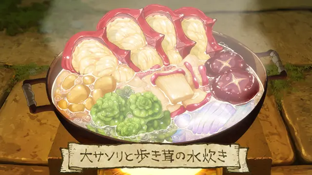
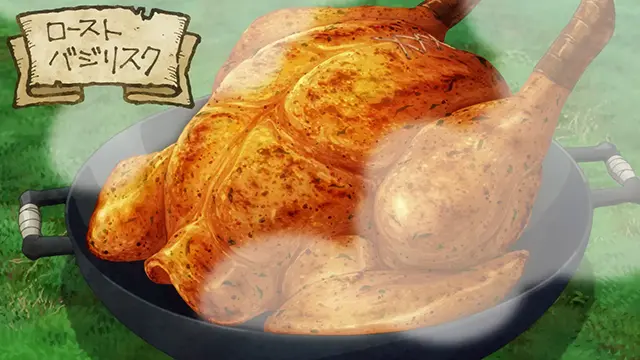
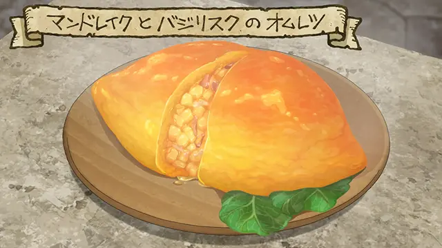

大蝎子和走路菇汤锅

材料（3~4人食用）：
- 大蝎子——1只
- 走路菇——1个
- 蘑菇腿——2条
- 藻类（花苔·葛仙米藻）——适量
- 逆生芋——约5个中等大小的
- 史莱姆干——依喜好添加
- 水——适量
制作步骤：
- 去掉大蝎子的钳子、头、腿和尾巴，尤其是有毒的尾巴，吃了会闹肚子。
- 在大蝎子的身上切几刀，使其更容易受热和炖出肉汁，让锅里的食物更入味也更容易吃。
- 去掉内脏，因为内脏又苦又难嚼。
- 去掉走路菇的屁股和三厘米厚的表皮，但是保留脚部，因为脚部很好吃。
- 走路菇切片后与大蝎子肉一起煮，还可以加些蔬菜一起煮，生长在迷宫地下一层的逆生芋是个不错的选择。
- 如果有干制史莱姆的话，也可以切成条状加进去一起煮。
食人植物水果挞
材料（3~4人食用）：
- 午餐剩下的大蝎子汤——200ml
- 史莱姆明胶——80g
- 自养玫瑰果实——中等大小3颗
- 米亚橡果——中等大小5~6颗
- 贝坦果实——中等大小3颗
- 盐——适量
- 胡椒——少许
制作步骤：
- 把食人植物的果实蒸一下。
- 沿着蒂切一圈，稍微扭一扭然后一拽，就能把籽去干净。
- 多敲打几下剥下来的果皮使之软化，紧紧地铺在平底锅上。
- 捣碎未成熟的果实，加入一些史莱姆明胶和少量大蝎子汤，搅拌至混合物变粘稠。
- 随后加入剩下的大蝎子汤和切成滚刀块的果实，稍微搅拌一下。
- 把混合物倒入铺着果皮的平底锅内。
- 加热一段时间，等表面冒泡时，就把剩下的果实加进去。
烤蛇尾鸡

材料（6人食用）：
- 蛇尾鸡——1只（不含尾巴、鸡胸肉）
- 魔力草——适量
- 盐和胡椒——适量
- 填料
- 解毒草——1中份
- 优质草药——1株
- 特效草药——1株
- 麻痹解除草——1中份
- 石化解除草——1中份
制作步骤：
- 把蛇尾鸡去尾去脚。
- 用热水烫一下鸡毛，然后拔光鸡毛。
- 去除内脏，涂抹香辣调味料，腌制一段时间使其更入味。
- 准备好蔬菜和香草做填料，把剁碎的香草放进鸡体内，把刀口封好。
- 把鸡肉串起来，夹在烤架上用火烤。
备注：
- 混合解毒用的药草可以充当解毒药的作用。
- 内脏经过腌制后会是不错的小菜，但是不适合新手做。
蛇尾鸡蛋曼德拉草蛋包饭

材料（1人食用）：
- 曼德拉草——中等大小1株
- 蛇尾鸡培根——50g（选择油脂较多的部分）
- 蛇尾鸡的蛋——1个
- 盐、胡椒——适量
- 番茄酱——依照喜好添加
制作步骤：
- 把曼德拉草剁碎。
- 煎培根，用培根煎出的油脂把食材煎熟。
- 用蛋液把食材裹起来。
- 加热至变蓬松。
备注：
- 蛇尾鸡的蛋只有蛋黄，煎熟了后比一般的鸡蛋黄一些，或者说红一些。
- 曼德拉草的头部最有营养，可以摆在蛋包饭上面。
油炸面衣曼德拉草丝和大蝙蝠天妇罗
材料（4人食用）：
- 曼德拉草——中等大小3株
- 大蝙蝠胸肉——400g
- 蛇尾鸡的蛋——1个
- 低筋面粉——150g
- 水——170ml
- 酱油——1大勺
- 酒——1大勺
- 盐——1大勺
- 大蒜和生姜——依照喜好添加
制作步骤：
- 把大蝙蝠肉切掉厚皮，切成大块，稍微划几刀，用调料腌制。
- 剥曼德拉草的皮，最好先把手脚去掉，然后把缠在一起的部分解开，把身体部分的皮去干净，手脚削掉深色的部分就好了。
- 把曼德拉草的根和菜叶切丝。
- 用水稀释蛇尾鸡蛋液，筛入一些面粉，轻轻搅拌，不要让面粉结块。
活动铠甲大餐
清蒸活动铠甲
烤活动铠甲
活动铠甲汤
矮人风炒活动铠甲
清蒸活动铠甲
材料（5~6人食用）：
- 活动铠甲（带壳）——1整块
- 调味料（盐、酱油、醋等）——依照喜好添加
备注：
- 使用活动铠甲头盔部分制作。
- 头盔的铁锈味难以散去，故非常不好吃。
烤活动铠甲
材料（1人食用）：
- 活动铠甲——1大片
- 调味料（盐、酱油、醋等）——依照喜好添加
备注：
- 使用活动铠甲腿甲部分制作。
- 因为铠甲的部分是金属，所以烤好后要当心烫。
- 虽然还是有股铁味，但意外的很好吃。
活动铠甲汤
材料（4人食用）：
- 活动铠甲——3~4大片
- 蛇尾鸡的蛋——1个
- 草药——1束
- 酱油——1大勺
- 特制酱汁——1大勺
- 盐和胡椒——适量
矮人风炒活动铠甲
材料（3~4人食用）：
解毒草——2束
草药——1束
活动铠甲——中等大小7~8片
特制酱汁——1大勺
盐和胡椒——少许